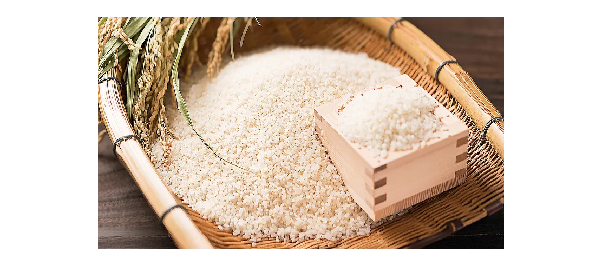
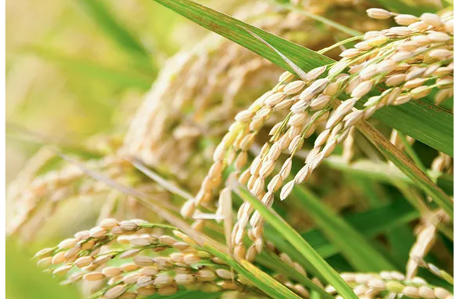
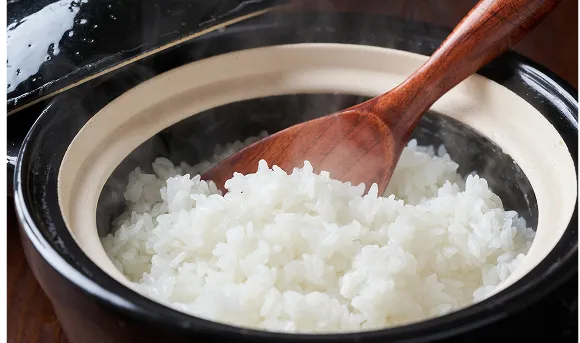
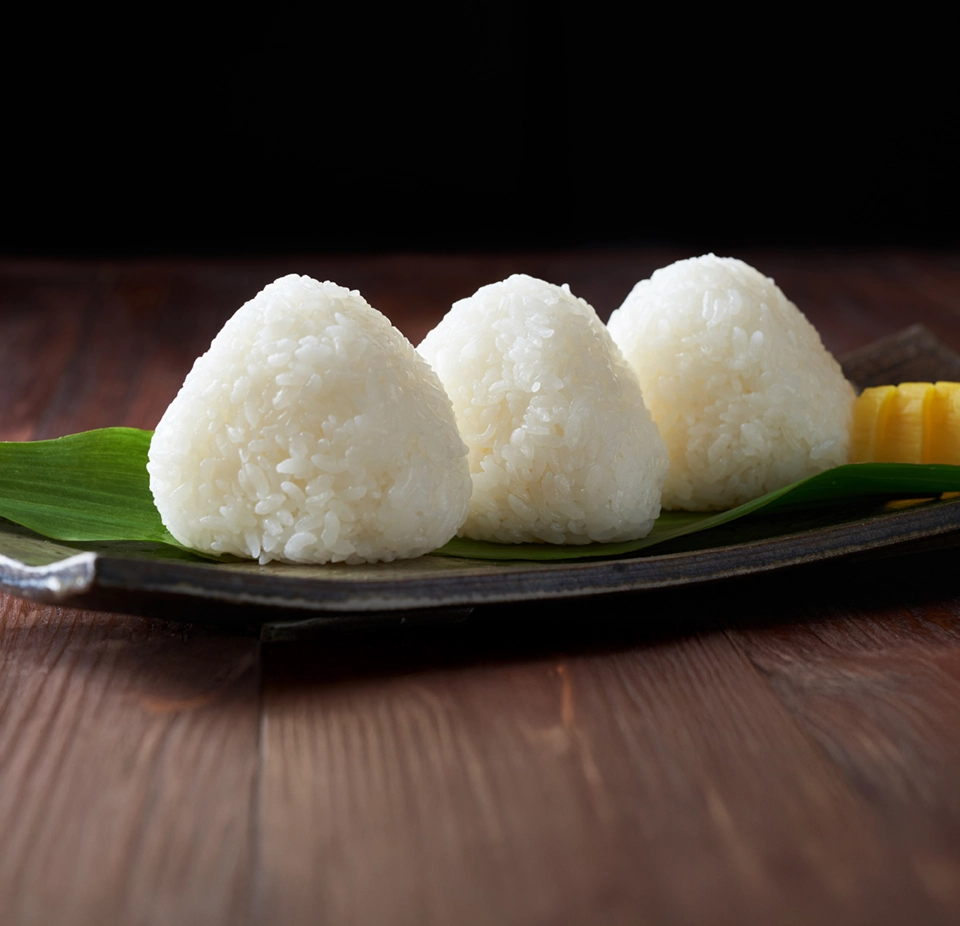

つやはるかについて

「お米は炊き立てもいいけど冷めてもおいしいもんがほんもんだ」という精米店を営んでいた祖父の言葉
その教えをもとに私たちは「毎日でも食べたい、おむすびに最適なおいしいお米」を目指しました

誕生
「つやはるか」は「むすび」と地元農家と共に開発して生まれた大分ゆせん町発のブランド米です。
農薬や化学肥料の使用を必要最低限に、土づくりから丁寧に育てています。
品種改良ではなく地元の土・水・育て方を見直し、ゆせん町の環境に最も適したやさしくて甘い米「つやはるか」が生まれました。

特徴
「つやはるか」は、炊き上がったときの米つぶにツヤがあり、見た目にも美味しいお米です。
口に含むと自然な甘みが広がり、お米だけでも満足できます。
時間が経ってもお米が硬くなりにくい、おむすびに最適なお米です。

限定米
「つやはるか」は、地元農家と「むすび」で専属契約しているため、他では味わうことができない貴重なブランド米です。
「つやはるか」は、現在「むすび」の店頭でのみご提供しています。
店内のすべてのおむすびに「つやはるか」を使用しています。
地元農家とともにお米本来のおいしさを見つめ直し、
「冷めてもおいしい」
「やわらかくツヤがある」
「毎日食べたい」
そんなおむすびの理想を形にしました。